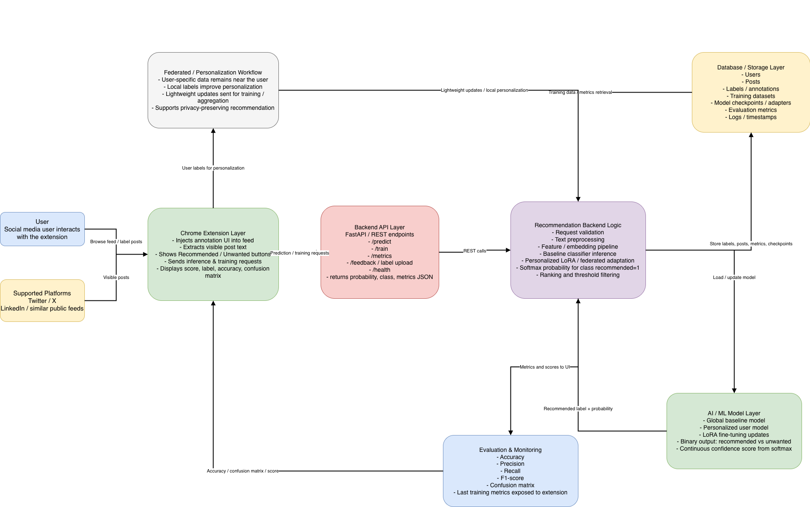
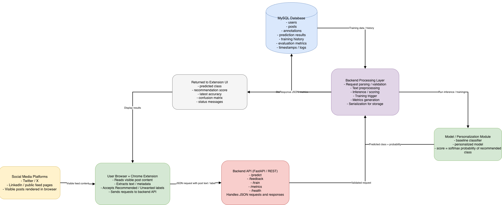

Prepared by Odai Atef Atiya Abdelbaky
Master of Science in Artificial Intelligence, College of Informatics, Midocean University
Supervisor: Dr. Ashraf Alsaed
Social media platforms generate huge and continuously growing streams of information.
Most recommender systems depend on clicks, scrolling, likes, and dwell time.
Users often cannot understand why content is recommended, reducing trust and control.
This thesis proposes a Chrome extension that gives users explicit influence over recommendations.
The primary method for inferring user preferences is to use implicit behavioral signals, but these signals tend to be noisy and easily misinterpreted.
Most mainstream recommendation algorithms are opaque, so users are less likely to trust the algorithm and correct undesired patterns.
Most systems optimize engagement for the platform instead of the goals of users.
Most personalization models require extensive centralized tracking and restrict learned preference profiles to a single platform.
This research project attempts to solve this issue via user-directed recommendations through a Chrome extension.
Users explicitly label posts as Recommended or Unwanted, creating clear preference datasets.
A lightweight model that runs locally on the user device learns from user-generated feedback.
The proposed system aims to provide a more transparent, private, and less overwhelming experience for users.
Develop a Chrome extension capable of overlaying annotation buttons on social media posts within supported platforms.
Collect labeled feedback from users to create a personalized training dataset reflecting individual content preferences.
Train and optimize a recommendation model that learns from these annotations to predict which future posts should be highlighted or hidden.
Implement local or lightweight model training to preserve user privacy and minimize data transfer.
Evaluate the system using both quantitative and qualitative metrics.
This thesis describes a user-centered and privacy-preserving recommendation framework through the implementation of a Chrome extension.
The proposed system enables users to provide an explicit recommended or unwanted label to social media posts. This creates a clearer and more transparent preference model than typical implicit-feedback approaches.
Low-Rank Adaptation (LoRA) enables efficient model adaptation on a user device without collecting large amounts of centralized data.
Chapter 1 introduces the research problem, objectives, and contributions.
Chapter 2 reviews recommender systems, social media personalization, browser-based interventions, and LoRA.
Chapter 3 presents the architecture, data collection process, backend API, and database design.
Chapter 4 describes experiments, datasets, evaluation, and results.
Chapter 5 summarizes the findings and future directions.
The proposed interactive recommendation system uses explicit user feedback through classifications of recommended and unwanted traffic.
The framework has three major components: a Chrome extension, a backend application, and a MySQL database.
The Chrome extension identifies visible posts, extracts relevant content, and provides a straightforward annotation interface. The system captures explicit preference signals that can later be used to create personalized recommendations and filtered content.
Each time a user labels a post, the extension pulls relevant text snippets and metadata from the interface.
This data includes the content of posts, platform source, a local identifier, the assigned label, and interaction time.
After a user labels the post, the extension sends those records to a back end API.
The back end validates and processes the records, then stores them in MySQL.

One significant advantage of this methodology is the identification of explicit user interaction as the means of producing data.
This gives more transparency because users are familiar with how the data they provide is generated and used.
It also enhances data quality because the data is derived from intentional and interpretable feedback.
Cross-platform functionality allows a more versatile and comprehensive profile of user preference to be developed.
This approach includes an artificial intelligence component defined by the technique of Low-Rank Adaptation (LoRA).
By collecting labeled posts through the Chrome extension, a supervised dataset becomes available for training or adapting a recommendation model.
LoRA provides an efficient means of fine-tuning compared to retraining a large language or text model. This reduces computational resource requirements and development time for personalized recommendations.
The system was evaluated by examining both model performance and the correct integration of Model, Backend, and Browser.
Social media posts were classified into two target classes: recommended and unwanted. Downloaded datasets from Kaggle and ChatGPT-generated user behavior scenarios were used for testing and experimentation.
The output was designed to provide recommendation scores, not only hard class labels.
The environment consisted of a backend API for training and inference, an interactive browser extension, and a machine learning pipeline using LoRA-based personalization.
The aim was to create a complete end-to-end recommendation workflow instead of a single isolated classification model.
This setup allowed evaluation of the integrated system under realistic conditions.
CPU: Apple M4 Pro
RAM: 24 GB
Operating System: MacOS Tahoe
Python Version: 3.9.6
Node.js Version: 24.13.1
Browser for Extension Testing: Google Chrome V146.0.7680.178
The backend framework is FastAPI with Uvicorn API runtime server and Python.
Machine learning libraries include PyTorch, Transformers, PEFT, Datasets, Scikit-learn, NumPy, Pandas, and Accelerate.
The backend also uses JWT authentication, passlib for password security, SQLAlchemy, and MySQL via PyMySQL. The extension uses Manifest V3, JavaScript, popup-based interaction, content scripts, and chrome.storage.local.
A transformer-based sequence classification model with Low-Rank Adaptation (LoRA) was used. Base model name: xlm-roberta-base.
Training defaults: 3 epochs, batch size 8, learning rate 0.0002, and maximum sequence length 256.
Minimum samples for training: 20. Maximum posts used at a time: 1000.
User-specific adapter directories allow each user to train and use a separate LoRA adapter.
A transformer-based sequence classification model with Low-Rank Adaptation (LoRA) was used.
The application was designed to support the Arabic language.
ChatGPT was used during the experimental preparation phase to help simulate user preferences and behavior scenarios. Posts were collected from Kaggle and categorized into Recommended vs Unwanted.
Content categories included entertainment, sports, news, fashion and style, food and cooking, travel, home and decor, relationships, marketing, entrepreneurship, career advice, and industry insights.

The recommendation framework can surface relevant posts and deprioritize unwanted content. It provides a transparent alternative to conventional opaque recommendation models.
The work combines explicit feedback, lightweight learning, and cross-platform functionality.
Future work can strengthen personalization quality, privacy safeguards, and broader deployment.
Presenter: Odai Abdelbaky